Thank you for purchasing my theme. If you have any questions that are beyond the scope of this help file, please feel free to email via my user page contact form here . Thanks so much!
Before setting up the project, you should have a basic understanding of the following: Html, Css, Javascript, Node.js, npm, Next.js for more information about the above topics, you can visit the following links: HTML CSS Javascript Node.js Next.js npm
The project is built with the following versions:
Node.js:
Version
24 or higher
is required to run the project.
[Node.js Official Site]
npm:
Version
11
was used for dependency management.
[npm Official Site]
Next JS:
Version
16
was used for development.
[Next.js Official Site]
Please ensure your development environment matches these versions for optimal compatibility and performance.
To check your installed versions, run:
node -v
,
npm -v
The folder structure of the Rosavo project is organized to help you easily locate and manage different parts of the application. Each folder serves a specific purpose, such as storing public assets, application logic, reusable components, configuration files, and more. Understanding this structure will make it easier to customize, maintain, and scale your project.
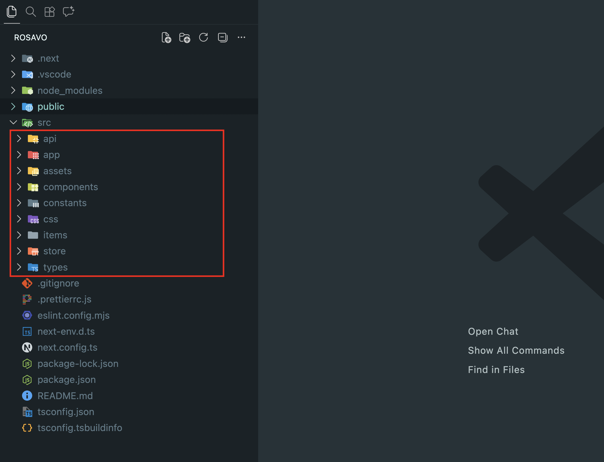
Your computer should have Node.js (version 24 or higher) and npm installed to manage the dependencies. You can download Node.js (which includes npm) from the following link: Node.js
To verify your installation, run the following commands in your
terminal:
node -v
and
npm -v
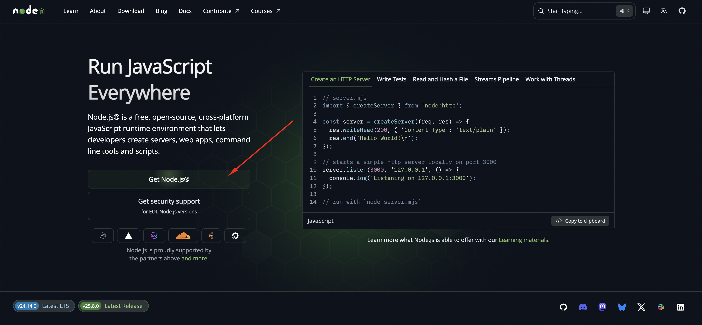
To install the project dependencies, run the following command in the
project directory:
npm install
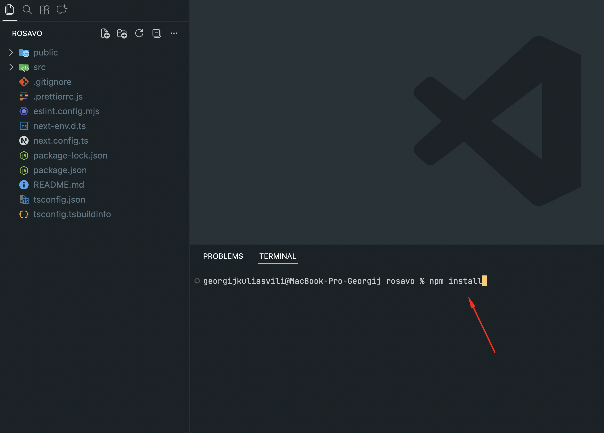
This command will read the
package.json
file and install all the required dependencies for the project. Once
the installation is complete, you can proceed to customize and run the
application.
All asset files are located in the
src/assets
folder. All other images are loaded via external URLs and are defined
using standard HTML
<img>
tags in Next JS components.
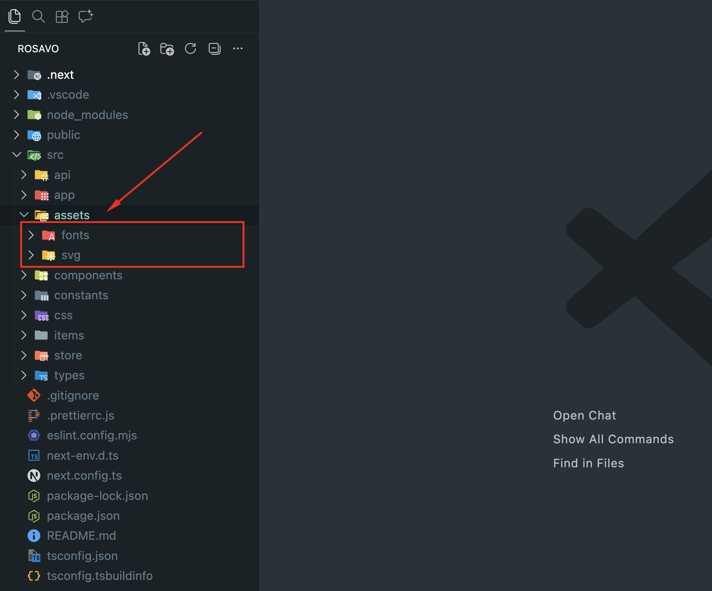
To change any image, simply replace the URL in the corresponding
Image
component with your own image link. This approach allows for easy
customization without modifying local files.
The project uses vector graphics in SVG format. You can easily replace these graphics with your own by placing the SVG code in the same file and keeping the original file name. Please note: the size of your SVG should match the original dimensions to ensure the application's design remains consistent.
Fonts are located in the src/assets/fonts folder and are configured in the src/css/_fonts.css file. To add your own font, simply place the font file in the src/assets/fonts directory and define the font in the _fonts.css file.
In most cases, you will need to replace the image URL in the data
array located in the
api
folder, where the data arrays are stored (these arrays will be fetched
asynchronously in the future).
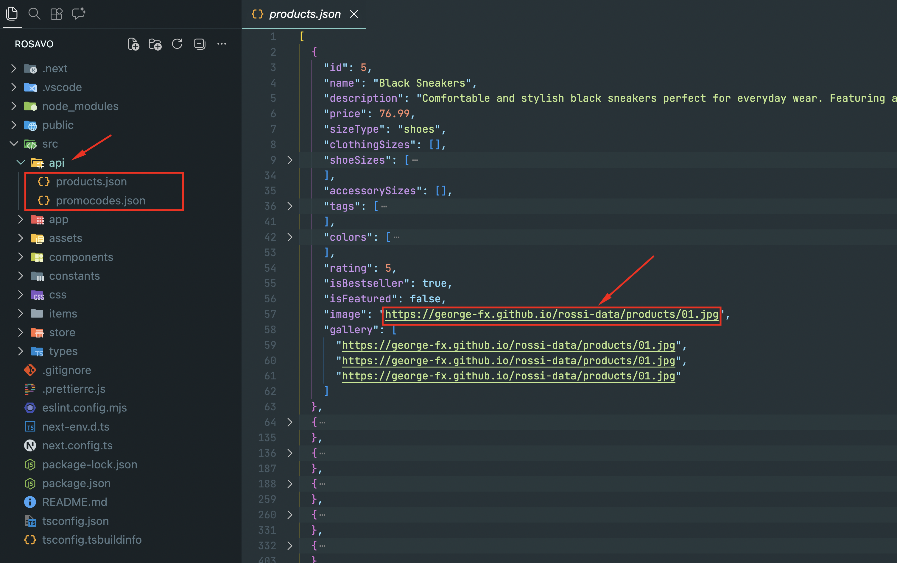
The project uses CSS for styling. Global styles and variables are
located in the
src/css
folder.
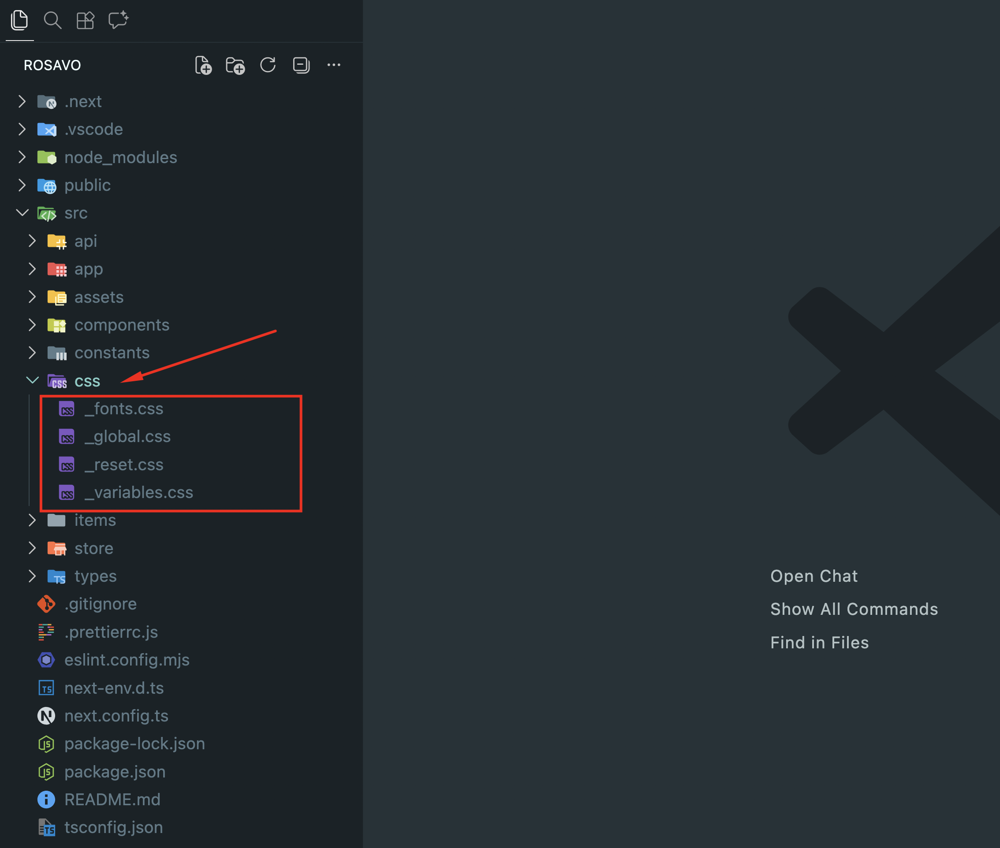
To customize colors, fonts, and other design tokens, edit the CSS variables in the corresponding files. Changes will be automatically reflected throughout the application.
Additionally, each screen in the
src/app/*
folder has its own dedicated CSS file, allowing you to customize the
appearance of individual screens independently.
To run the project, use the following command:
npm run dev
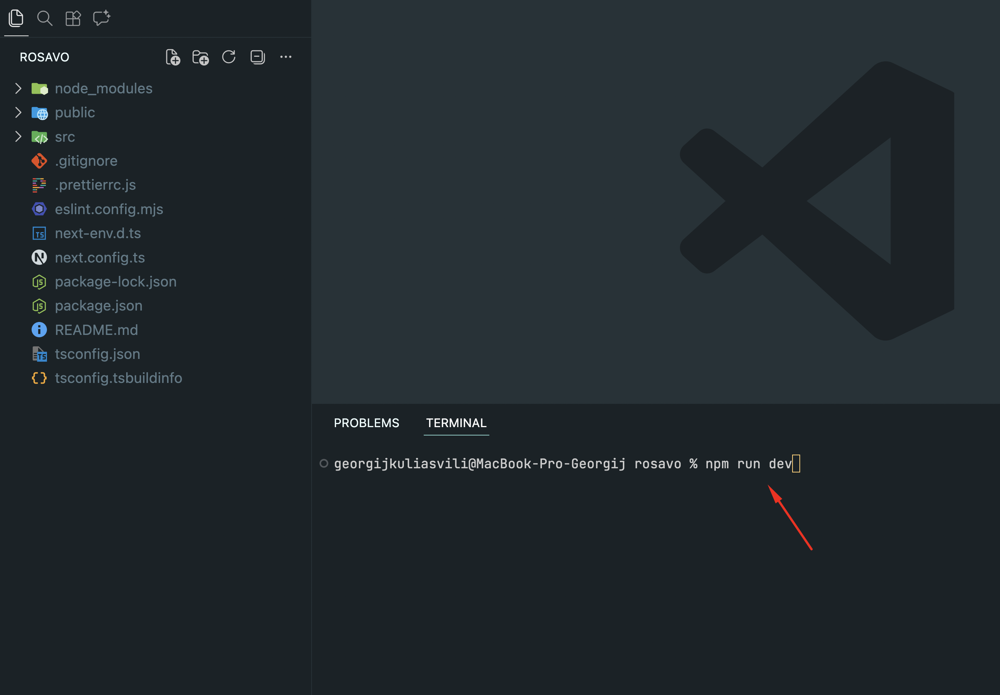
To build the project, use the following command:
npm run build
You can find more information on Next.js production builds in the
Next.js documentation:
Next.js Build Documentation
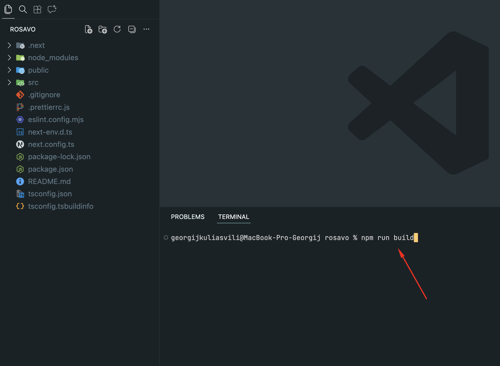
After running the build command, all build files will be located in
the
.next
folder. For deployment, move the contents of the
.next
folder to your server.
You can deploy
managed Next.js with Vercel
, or self-host on a Node.js server, Docker image, or even static HTML
files.
You can find more information on Next.js deployment in the Next.js
documentation:
Next.js Deployment
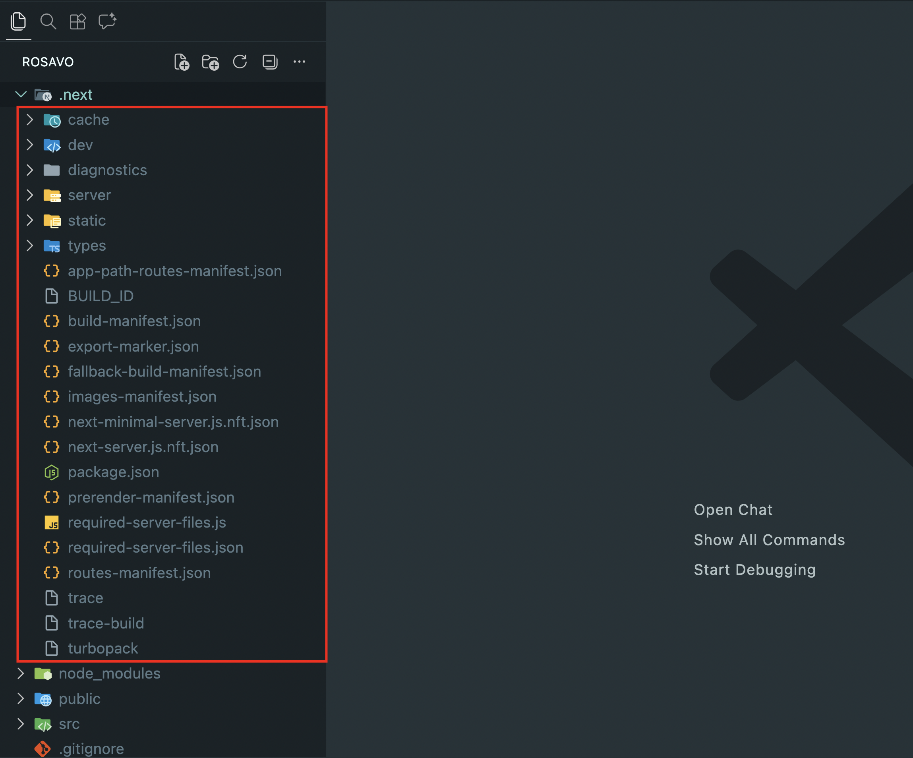
By default, the project uses mock APIs located in the
src/api
folder. These mock data sources allow you to test and develop the
application without connecting to a real backend. You can easily
replace them with real API endpoints when you are ready to integrate
live data.
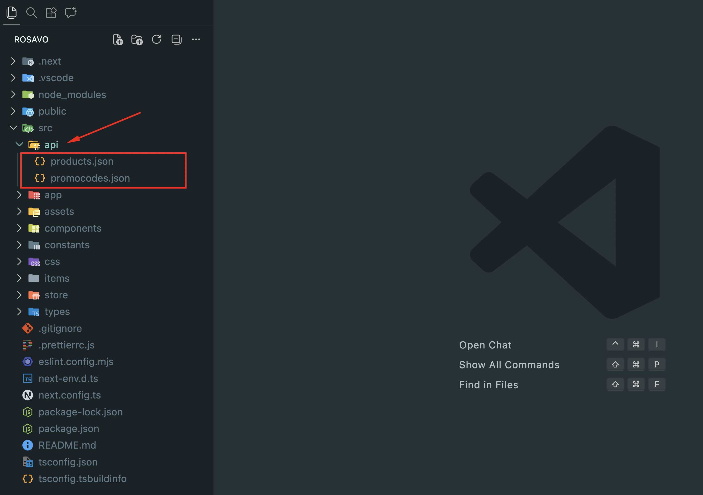
To connect your application to your own API and use real data instead of mock data, you can make API requests directly in the files where the data is needed. For example, to fetch products, you might place the request in the home screen component. A common approach is to use a library like Axios to handle HTTP requests. This allows you to easily retrieve data from your API and display it in your components.
Example of fetching products using Axios:
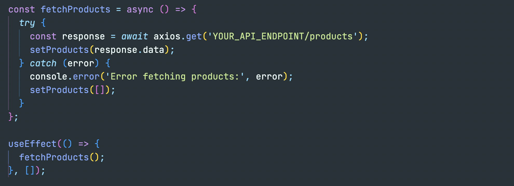
If you have any questions or need support, please contact me via
email:
kul.giorgi@gmail.com
The project uses the following dependencies:
The project uses the following font:
Version 1.0.0 – Initial Release (March 8, 2026)
Product listing
Cart and checkout
Orders and promo codes
Wish list
User profile and settings
FAQ